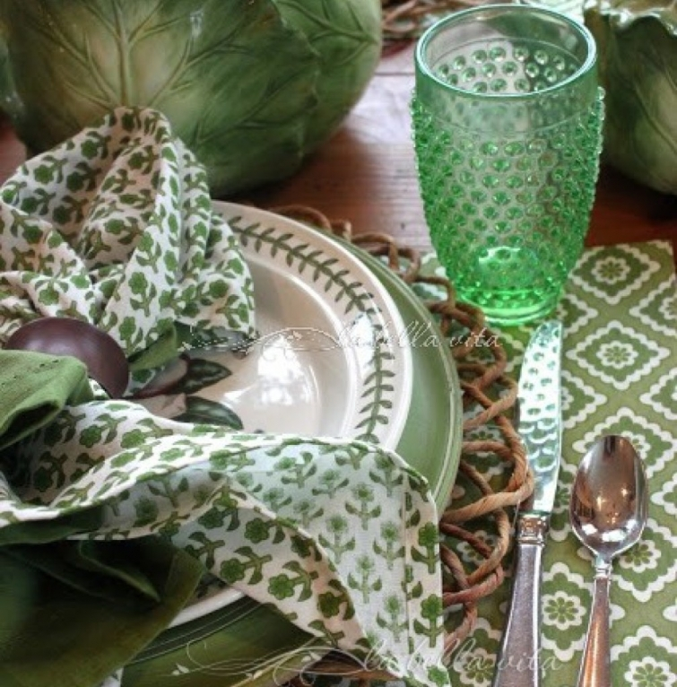
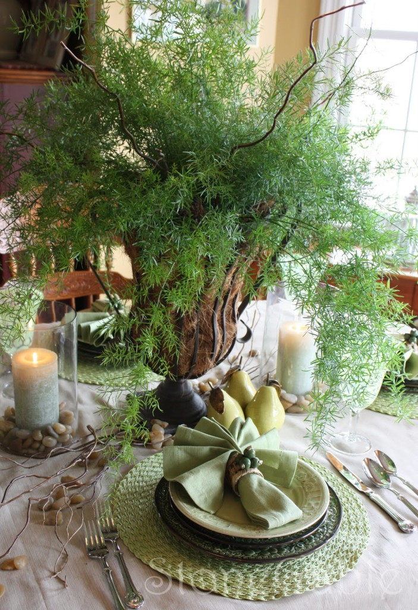

.png)
.PNG)
.PNG)
.PNG)
.PNG)
.PNG)
.JPG)
.JPG)
.PNG)
.PNG)


Happy Weekend to you! Are you ready to celebrate St. Patrick’s Day this week? If not, I have plenty of ideas for you in this post. Grab a cup of hot tea (Irish breakfast, perhaps?) and enjoy. 🙂
Let’s begin with table settings for the day of all-things-green.
This one is not only gorgeous, but there is also a great recipe for a delicious green pasta in the post.
source
How about a green table setting at Stone Gable?
Yvonne always does an amazing job with her tablescapes.
source
And now on to some food for our celebration…
Corned Beef with a Marmalade-Mustard Glaze
An Irish Potato Pie
(This is definitely on my list to try!)
Perhaps you would prefer a St. Patrick’s Day pizza…
or a Bell Pepper and Potato Frittata.
(I thought the bell peppers in this were very clever. 🙂 )

I had an artichoke and mushroom quiche for lunch today, but I think this Lucky Spinach one looks delicious!
Now let’s look at a few desserts…
Beginning with these Mint Oreo Truffles.
yummmm…
And you know I love these Gingham Shamrock cookies.
By the way, the icing does not appear to be very complicated.
(You spray it on!)
Need a dessert with more chocolate?
Try this Peppermint Brownie Cheesecake Trifle.
Have you had McDonalds’ Shamrock Shake?
You can find a copycat recipe for it here so that you can make it at home
(any time you want. 🙂 )
For other beverages, I sooo wish I had purchased this drink dispenser when I saw it a few years ago at Anthropologie. It is no longer available, and I have not been able to find it on Ebay either. 🙁 But wouldn’t it have been just perfect for St. Patrick’s Day?
Now to cuteness for St. Patrick’s Day.
A little party favor with Irish Tea…
St. Patrick’s Day cards filled with chocolates…
Printable shamrocks
(and some other great ideas on the site!)
And Shamrock Boutonnieres.
These will keep you pinch proof! 🙂
We watched Leap Year last night. If you’ve not seen the movie, it is a funny (silly at times) love story filmed in Ireland. Perfect for St. Patrick’s Day. 🙂
I kept thinking I know that actor from somewhere… but I could not figure it out. Then I watched the credits and realized it was Matthew Goode who played Henry Talbot in Season 6 of Downton Abbey! The beard threw me off.
If you get a chance to see the movie (or if you have already watched it) you might enjoy checking out this post from Design Sponge. I always like reading their Living In posts (and they really nailed the look of the movie in this one!)
And that wraps up this week’s Talk of the Weekend. You may notice that I did not include any homes or rooms in this post. I have a good reason for it. I have a TON of green decorating I want to share with you this week. So please stay tuned for the wearing of the green in our house!
Until next time…


.PNG)
I was looking at the actor in your video still and realized *I* know him as Finn from The Good Wife!
St. Patrick’s Day is one of my favorite holidays. My high school’s nickname is The Shamrocks!
Leap Years a great film …thanks for mentioning it …I must watch it again sometime. All your food and decorating suggestions look really good Kelly. Especially the Irish Potato Pie …so yummy! 🙂 I’ll definitely be cooking that sometime soon.
Rosemary
Hi Kelly. My Mom called me her little Irishman (despite our very English heritage). I LOVE potatoes and that potato pie caught my attention right away. Definately something I’d love to try. Aren’t the pizza and the peppers cute? Thanks for the great ideas!
I saw those shamrock cookies and thought, “how in the world?” Then you answered my question!! 🙂 And that potato pie, yum! I definitely want to try it. Thanks for the links.
What a fun post- green is my favorite color, so I’m a happy girl with all this inspiration. Too funny about Matthew Goode. He just really looked like someone of the time period of Downton, didn’t he? Good thing the casting agent saw past his scruffy beard. 🙂
Thanks for the reminder about shamrock shakes! They’re practically a tradition around here!
Kelly,
Oh my goodness, I was printing recipes like mad and wondering how I could fit all of the St. Patrick’s yumminess in by Thursday. Potato pie and potato frittata, yes please. I loved the green goodness of your post today and will be keeping this post in my “future reference” file. Happy St. Patrick’s Day to you!
xo,
Karen
Loving it! I needed a nice pick me up today due to losing my Zzz’s last night! Green just may be my newest favorite color! I want to make ALL these recipes and this week and Holy Week may be the best time to try! Thank you for another cheery post!! Are you kidding me? Plaid spray icing!! Although I just saw a gold spray used on Oreos from Wilton! What next?!! ( could be used on mini Oreos as golden coins at the end of the rainbow!! )☘💚🌈☘
I am working on my St. Patrick’s Day tablescape today so I adore all of the inspiration that you’ve shared.
Thank you so very much for sharing your pantry makeover on Thoughts of Home on Thursday. It is my sincere hope that you will join in and share your sunshine again and again.
Fun post – and those gingham cookies are too cute! I have been planning to see that Leap Year movie too. I have it saved (with a million others) as a favorite on my DVR. It looks like it would be entertaining!
Shelley
Lots of goodies! LOVE Leap Year. I even bought it which I don’t do often. Another fun celtic movie is Local Hero…an oldie but a really good one.
Thanks for your inspiring postings. Love your site.
As they say on ESPN radio “long time listener,first time caller”. So this is the blog equivalent…long time reader, first timer commenter! Love your blog, and am envious of how you pull everything together – all the details with everything.
I would have loved to see your classrooms! Mostly want to know where you find all your great linens – the placemats and napkins??!!! These green napkins with placements are fabulous. What brand are they? April Cornell? I usually buy white Pier1 cotton napkins and monogram my initial ( boring). As I have a hard time finding nice linen napkins. Would love to hear back! thanks ~
——————————————————————–
I think the placemats and napkins you are referring to are not from our house, but actually from another home that I wrote about on the blog. But if it is indeed the one I am thinking of, they are old April Cornell ones. If you cannot find them in the shop or online from the April Cornell site, I know Home Goods often has them on their linen aisle. I have good luck with all our linens from Williams Sonoma and Pier 1. Those are my go-to sources for them, and you already know about Pier 1 from your own experience with them. I would not call yours boring – especially if you have them monogrammed. The white allows you to play with color on your plates and other accessories on your table. 🙂
Hope you have a great weekend!
Kelly
Oh I love Leap Year. In fact my children purchased it for me for my birthday last year. Thanks for reminding me to get it out to watch this week. Even though Marvin is from Savannah where they do things big for St Patrick’s Day, we are low key here. And we are babysitting our youngest grand so we will probably have something easy for dinner on the 17th. Right now it is looking like spaghetti sauce made in the crock pot!!
Kelly, what a fun post! Loved the green place settings! Those shamrock cookies are so cute and festive too…May have to try my hand at those! So many great ideas for a St. Patrick’s Day Menu. I so enjoy your Talk of the Weekend posts.
I love anything with darlin’ Amy Adams, so I’ll have to check out this movie. When I was in high school, I made my Algebra teacher shamrock cookies as a total bribe to go easy on me! Luck of the Irish was hard to find in math class.